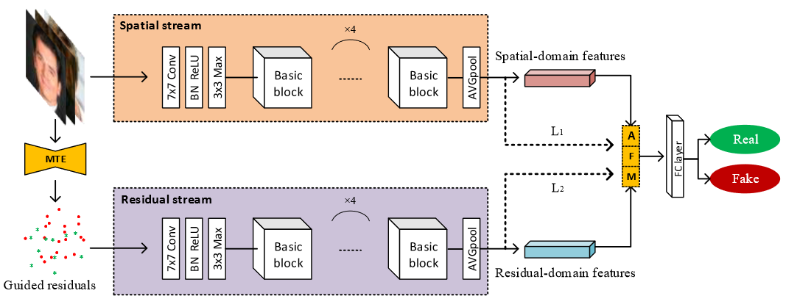
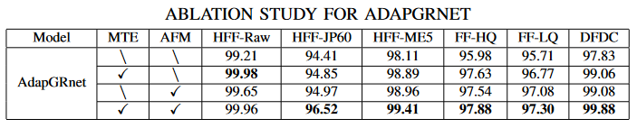
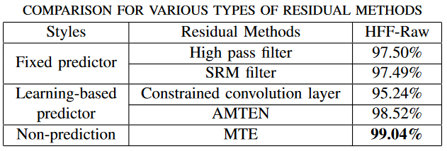
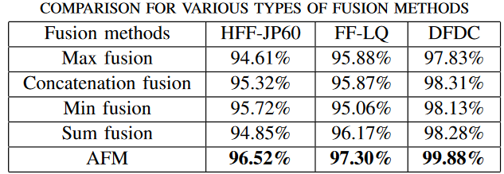

1. Introduction
利用基于残差的特征能够突出细微的伪造痕迹并且抑制无关的图像内容。下图展示了从图像中提取伪造痕迹的理想流程，在原始图像中减去图像内容得到篡改痕迹。本文将通过这种方法提取的残差称为“引导残差”。
残差特征能够提高对高质量图像的检测性能，但对低质量图像的提升帮助甚微，因为低质量图像存在的压缩和resize等操作会对伪造痕迹产生干扰，故还需要RGB的空域信息来提供更多的信息。本文主要贡献如下：
- 提出了细粒度的伪造痕迹提取器MTE(Manipulation Trace Extractor)来提取引导残差，克服了基于预测残差可能存在的偏差问题；
- 设计了有效的注意力融合机制AFM(Attention Fusion Mechanism)来进行特征融合，自适应地分配双流网络的空间特征和特征权重。同时，还利用通道注意力模块来建立伪造痕迹之间的依赖关系。
- 提出了双流模型AdapGRnet(Adaptive Fusion Based Guided Residuals Network)，通过将MTE和AFM与Backbone结合，在现实场景下进行伪造检测。AdapGRnet能够学习空域和残差域特征，同时检测高质量和低质量的伪造图像。在四个数据集上达到了SOTA的准确率和鲁棒性。
2. Method
2.1 Overview
-
补充性分析：
通常情况下，空域信息既包含有适用于伪造检测任务的伪造痕迹，也包含适用于分类和识别任务的图像内容信息。残差特征可以抑制图像内容信息，但同时也可能造成伪造痕迹的部分丢失，特别是当图像质量低时。
因此，利用空域信息和残差特征的互补性来进行伪造检测。
-
双流网络架构：
通过双流相互增强的方式学习空域和残差域特征，下图为双流模型的框架图。首先用MTE提取RGB图像的引导残差，然后将RGB图像和引导残差输入到主干网络(ResNet-18移除全连接层)中进行特征学习。最后通过AFM融合双流学习到的空域和残差特征。

2.2 Manipulation Trace Extractor
引导滤波器是一个边缘保留平滑算子，它保留图像内容并过滤到平坦区域的篡改痕迹。篡改痕迹可通过$R_{gr}=|p-q|$得到，其中$p$为输入图像，$q$为滤波器输出，如下图所示。
下图展示了高质量人脸和低质量人脸通过高通滤波器和MTE得到的残差结果。第五行是用噪声分析对引导残差进一步放大。可以观察到，在高质量图像中，残差具有丰富的细节，并且不同篡改图像的残差之间存在明显差异。对于低质量图像，从第五行噪声分析中可以看到，在残差图像中存在白色块状纹理，难以区分。
2.3 Attention Fusion Mechanism
利用注意力机制融合双流的特征，空域流特征适用于从低质量的图像中学习特征，残差流适用于从高质量的图像中学习特征，设计的AFM模块如下图所示。
令得到的空域特征$f_{rgb}\in\mathbb{R}^{C\times H\times W}$，将其reshape得到$f_{rgb}\in\mathbb{R}^{C\times N_p}$，其中$N_p=H\times W$。经过矩阵乘法$f_{rgb}\cdot f^T_{rgb}=M_{rgb}\in\mathbb{R}^{C\times C}$，经过softmax得到注意力图$M_{rgb}$。同理得到残差域注意力图$M_{gr}$。再分别与reshape后的特征图相乘，得到新的特征图${f_{rgb},f_{gr}}$。
根据交叉熵损失$L_1$和$L_2$的softmax输出来分配双流的权重$\alpha$，$F_{attention}=\alpha_1f_{rgb}+\alpha_2f_{gr}$.
3. Experiments
使用的数据集为Hybrid Fake Face (HFF)，后处理包括JPEG压缩(压缩率为60，JP60)和模糊操作(5x5的均值滤波，ME5)。
3.1 消融实验
-
MTE与AFM模块消融实验
 -
不同残差提取方法消融实验
 -
特征融合模块的比较
